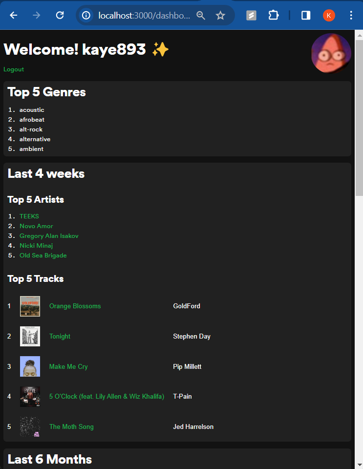
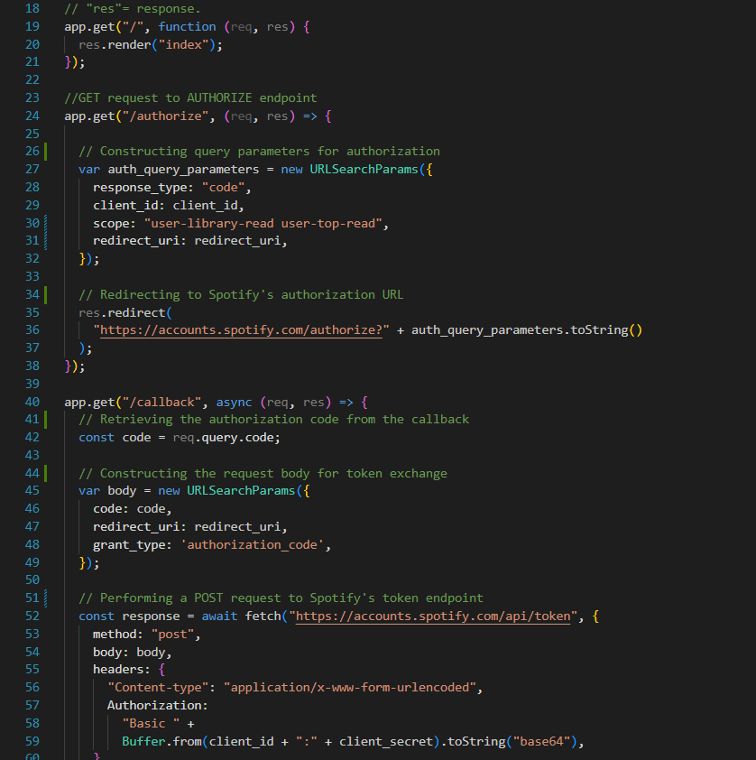

With the guidance of Alvaro Navarro, a developer advocate at Spotify, this Spotify Authentication and Analytics project is a web application that leverages the Spotify API for user authentication and provides insights into a user's music preferences. It allows users to log in with their Spotify credentials, access their top tracks and artists across different time ranges, and receive personalized recommendations.
Languages: Javascript, PUG, CSS
API Integration (Spotify API): Demonstrated proficiency in integrating third-party APIs, specifically the Spotify API. Utilized the Spotify API to fetch user data, including top tracks, artists, and recommended genres.
Web Development with Express.js: Developed a robust web application using Express.js, a Node.js framework for building scalable and maintainable web applications.
Authentication with OAuth 2.0: Implemented user authentication using the OAuth 2.0 protocol. Enabled secure login functionality through integration with the Spotify API.
User Authentication: Implemented user authentication using the Spotify API's OAuth 2.0 flow. Users can securely log in with their Spotify credentials.
Dashboard with Analytics: Created a dynamic dashboard displaying user information, top tracks, and top artists. Utilized Spotify API to fetch user-specific data, including track details and artist information.
Top Tracks, Artists, and Genres: Dynamically showcased a user's top tracks, artists, and recommended genres. Categorized data into different time ranges (Long Term, Medium Term, Short Term).
Interactive Recommendations: Implemented a feature allowing users to explore music recommendations based on their preferences. Users can click on track names to preview songs.
